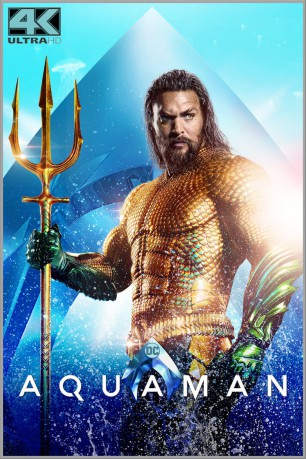

 
 IMDB-Wertung: 7.2 / 10
IMDB-Wertung: 7.2 / 10  Tomatometer: 65
Tomatometer: 65  Metascore:
Metascore: 
Arthur Curry besser bekannt unter seinem Alias "Aquaman", ist der rechtmäßige Erbe des Thrones von Atlantis. Doch bisher ist dem Sohn eines menschlichen Vaters und einer atlantischen Mutter die Herrschaft über das mystische Unterwasserkönigreich verwehrt. Aquamans Halbbruder Orm herrscht über Atlantis und möchte auch die anderen sechs Königreiche der Meere um sich scharen, um vereint einen Krieg gegen die Menschen an der Erdoberfläche zu führen. Um seinen Anspruch auf den Thron zu beweisen, macht sich Aquaman gemeinsam mit Mera auf die Suche nach dem Dreizack des ersten Königs von Atlantis. Als Orm von diesem Plan erfährt, hetzt er den beiden den Piraten Black Manta auf den Hals, welcher mit Aquaman selbst noch eine Rechnung zu begleichen hat.
Jahr: 2018
Dauer: 143 Minuten
FSK: 12
Land: Australien Studio: Warner Bros.Tonspuren: DTS - ,
Untertitel: Deutsch,
Auflösung: 1080p (1920x800) Größe: 10240 MB
Genre: Action, Sci-Fi, Abenteuer, Fantasy
Regisseur: James Wan
Drehbuch: David Leslie Johnson-McGoldrick, Will Beall, Geoff Johns, James Wan, Will Beall
Soundtrack: Rupert Gregson-Williams
Darsteller:
 Jason Momoa als Arthur
Jason Momoa als Arthur Amber Heard als Mera
Amber Heard als Mera Willem Dafoe als Vulko
Willem Dafoe als Vulko Patrick Wilson als King Orm
Patrick Wilson als King Orm Nicole Kidman als Atlanna
Nicole Kidman als Atlanna Dolph Lundgren als King Nereus
Dolph Lundgren als King Nereus Temuera Morrison als Tom Curry
Temuera Morrison als Tom Curry Michael Beach als Jesse (Manta's Father)
Michael Beach als Jesse (Manta's Father) Randall Park als Dr. Stephen Shin
Randall Park als Dr. Stephen Shin Graham McTavish als King Atlan
Graham McTavish als King Atlan Leigh Whannell als Cargo Pilot
Leigh Whannell als Cargo Pilot Julie Andrews als Karathen
Julie Andrews als Karathen John Rhys-Davies als Brine King
John Rhys-Davies als Brine King Djimon Hounsou als King Ricou
Djimon Hounsou als King Ricou Natalia Safran als Queen Rina
Natalia Safran als Queen Rina Hank Amos als Submarine Pirate
Hank Amos als Submarine Pirate Robert Longstreet als Professor James
Robert Longstreet als Professor James Nicolas Bosc als Atlantean Soldier #1
Nicolas Bosc als Atlantean Soldier #1Datei: X:\Comic-Filme\Aquaman (2018, FSK12, 1920x800) 3D.mkv seit 03.04.2019
Festplatte: Comicverfilmungen+MusikCD
 Es gibt insgesamt 44 Filme in der Gruppe 'Comic-Filme'
Es gibt insgesamt 44 Filme in der Gruppe 'Comic-Filme'